Tutorial 21: Customizing phylogenetic plots
Objectives
Complete the customizing phylogenetic plots workflow.
Interpret the reported values and generated artifacts in their scientific context.
Identify the canonical command references for each analysis step.
Prerequisites and working directory
Install the current PhyKIT release and create a dedicated working directory. Download the data linked in this tutorial into that directory before running the commands. All paths below are relative to this directory.
mkdir phykit-tutorial-21
cd phykit-tutorial-21
Workflow
All PhyKIT commands that produce tree visualizations share a common set
of plot customization options. This tutorial walks through each option
using quartet_pie as a demonstration, but the same options work for
character_map, phylo_heatmap, cont_map, density_map,
stochastic_character_map, ancestral_state_reconstruction,
concordance_asr, discordance_asymmetry, rate_heterogeneity,
and cophylo.
We use the 8-taxon mammal tree and 10 gene trees included in PhyKIT's sample data:
Download test data:
Mammal phylogeny;
Gene trees
TREE=tree_simple.tre
GENES=gene_trees_simple.nwk
Default output
The default quartet_pie command produces a phylogram with pie charts
at internal nodes showing concordance proportions:
phykit quartet_pie -t $TREE -g $GENES -o qpie_default.png
{kind=link}
Ladderizing the tree
The --ladderize flag sorts the tree by the number of descendant
tips at each node, producing a cleaner visual layout:
phykit quartet_pie -t $TREE -g $GENES -o qpie_ladderize.png --ladderize
{kind=link}
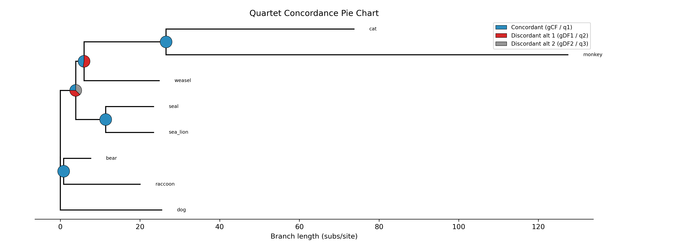
Cladogram layout
The --cladogram flag draws the tree with equal branch lengths and
all tips aligned at the right edge. This is useful when branch lengths
are uninformative or when you want to emphasize topology over
evolutionary distance:
phykit quartet_pie -t $TREE -g $GENES -o qpie_cladogram.png --cladogram
{kind=link}
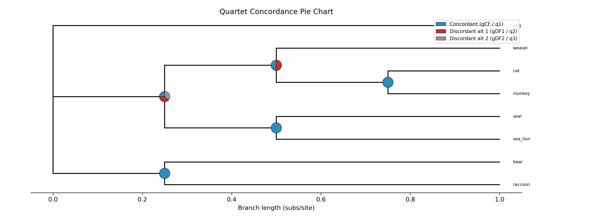
Circular layout
The --circular flag draws the tree as a radial phylogram with
the root at the center. Branches radiate outward and curved arcs
connect sister clades at each internal node:
phykit quartet_pie -t $TREE -g $GENES -o qpie_circular.png --circular
{kind=link}
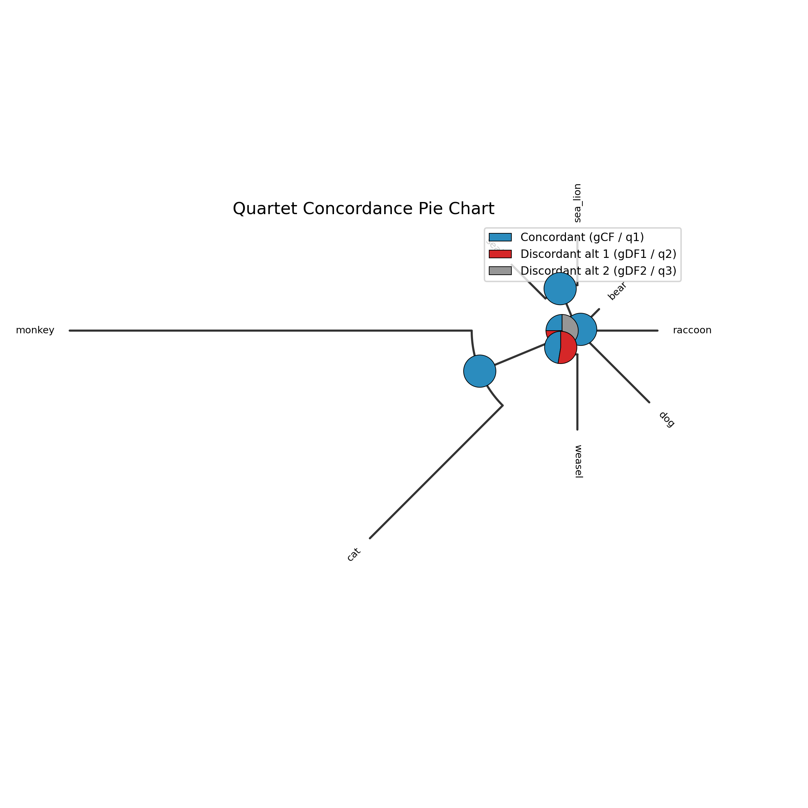
Circular + cladogram
The --circular and --cladogram flags can be combined. This
draws a circular cladogram where all tips sit on the outer ring at
equal distance from the center:
phykit quartet_pie -t $TREE -g $GENES -o qpie_circular_clado.png \
--circular --cladogram
{kind=link}
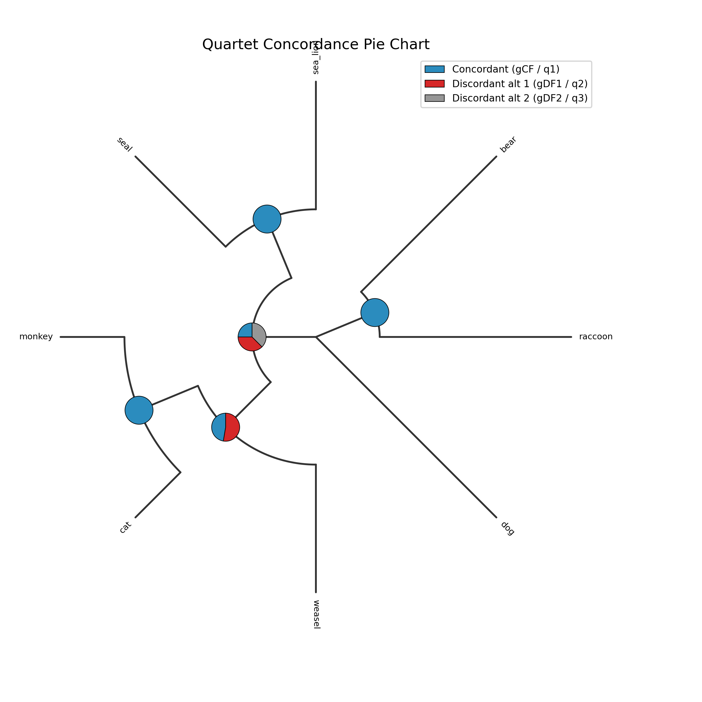
Annotating with values
The --annotate flag adds numeric values (gCF/gDF1/gDF2) near each
pie chart:
phykit quartet_pie -t $TREE -g $GENES -o qpie_annotate.png --annotate
{kind=link}
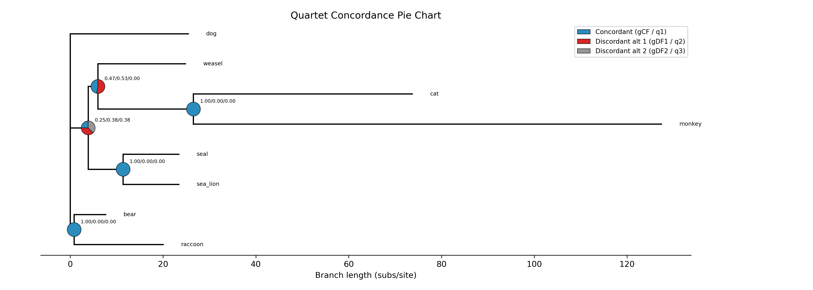
Custom colors
The --colors flag accepts comma-separated colors (hex or named) to
override the defaults. For quartet_pie, the three colors represent
concordant, discordant alt 1, and discordant alt 2:
phykit quartet_pie -t $TREE -g $GENES -o qpie_colors.png \
--colors "#2ca02c,#ff7f0e,#9467bd"
{kind=link}
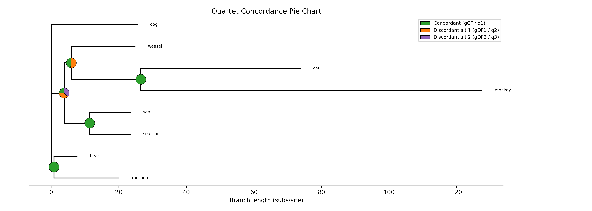
Custom title
The --title flag sets a custom title. Use --no-title to remove
the title entirely:
phykit quartet_pie -t $TREE -g $GENES -o qpie_title.png \
--title "Mammal Quartet Concordance"
{kind=link}
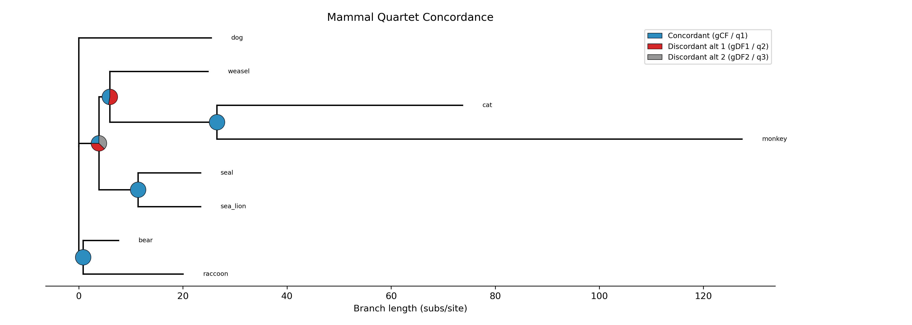
phykit quartet_pie -t $TREE -g $GENES -o qpie_no_title.png --no-title
{kind=link}
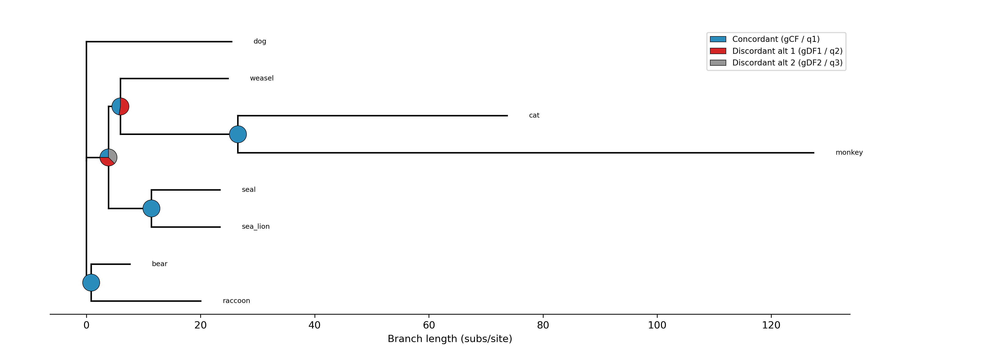
Legend position
The --legend-position flag controls legend placement. Options include
upper right (default), upper left, lower left, lower right,
center left, center right, or none to hide the legend:
phykit quartet_pie -t $TREE -g $GENES -o qpie_legend.png \
--legend-position "lower right"
{kind=link}
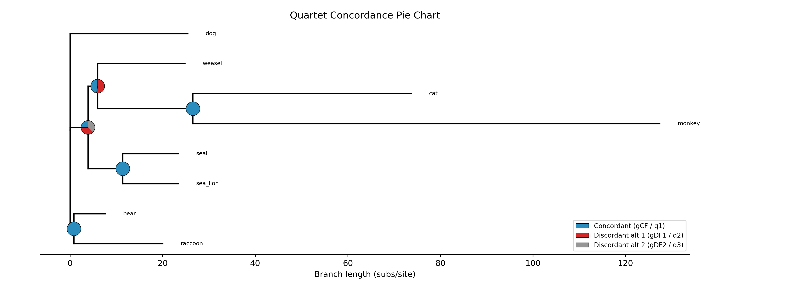
Coloring clades with a color file
The --color-file flag accepts an iTOL-inspired TSV file for coloring
tip labels, highlighting clades with transparent background bands, and
coloring clade branches.
Create a color annotation file (e.g., colors.tsv):
# node(s) type color label
bear label #e41a1c
raccoon label #e41a1c
sea_lion label #377eb8
seal label #377eb8
bear,raccoon range #ffe0e0 Ursids
sea_lion,seal range #e0e0ff Pinnipeds
monkey,cat,weasel range #e0ffe0 Carnivorans+Primates
The file supports three entry types:
label— color a tip's label text (field 1 = single taxon name)range— draw a transparent background band behind a clade (field 1 = comma-separated taxa whose MRCA defines the clade)clade— color the branches of a clade (same MRCA logic)
For range and clade, you only need to list enough taxa to
uniquely identify the most recent common ancestor — typically one
taxon from each side of the clade.
phykit quartet_pie -t $TREE -g $GENES -o qpie_colored.png \
--color-file colors.tsv
{kind=link}
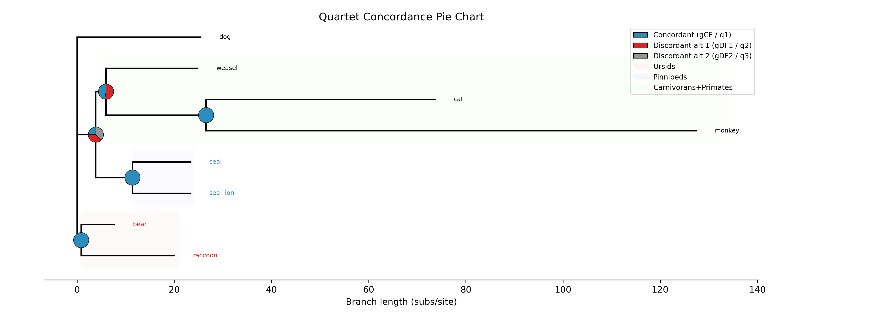
The color file also works with the circular layout:
phykit quartet_pie -t $TREE -g $GENES -o qpie_colored_circ.png \
--color-file colors.tsv --circular
{kind=link}
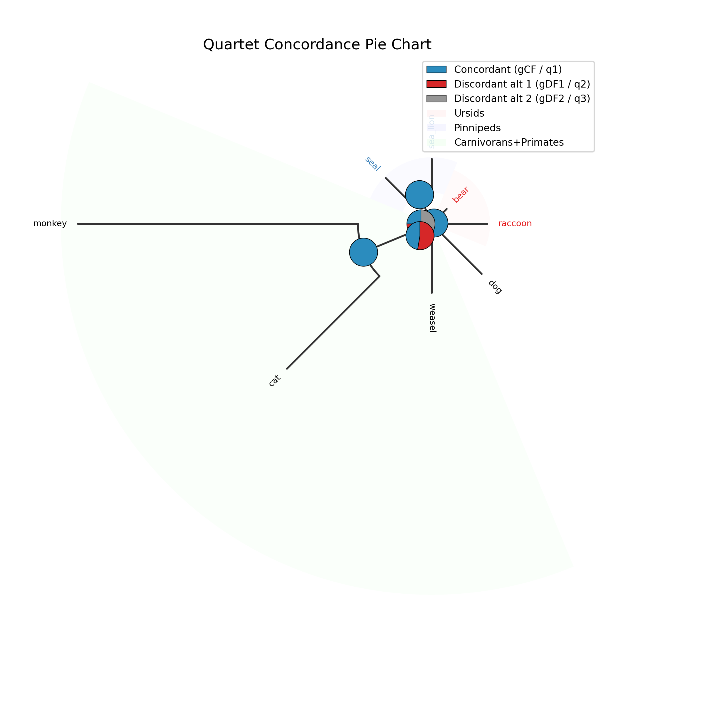
Combining everything
All options can be combined for maximum customization:
phykit quartet_pie -t $TREE -g $GENES -o qpie_full.png \
--circular --ladderize --color-file colors.tsv \
--annotate --legend-position "upper left" \
--title "Full Customization"
{kind=link}
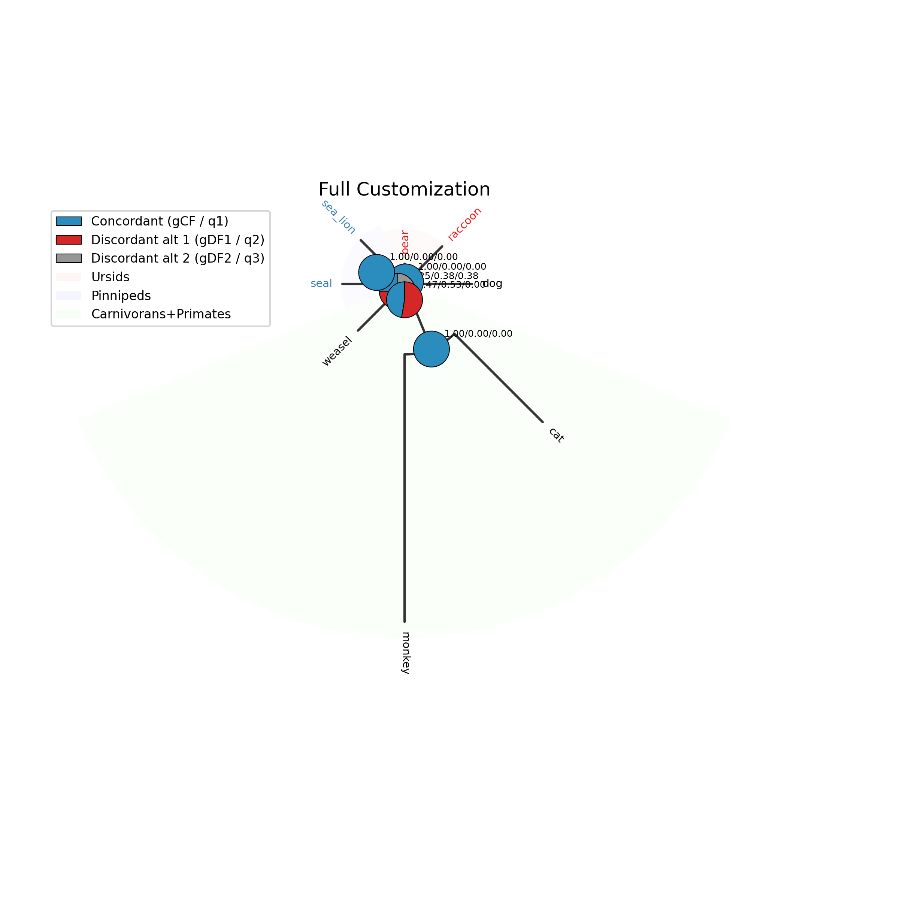
Additional options
Several other options are available for fine-tuning:
--fig-width/--fig-height— figure dimensions in inches (auto-scaled if omitted)--dpi— resolution in dots per inch (default: 300)--ylabel-fontsize— font size for tip labels; 0 to hide--xlabel-fontsize— font size for x-axis labels; 0 to hide--title-fontsize— font size for the title--axis-fontsize— font size for axis labels
These are useful for preparing figures for publication where specific dimensions or resolutions are required.
Expected artifacts
Each step identifies its expected terminal output or generated files. Confirm that those artifacts exist before continuing to the next step; filenames are relative to the tutorial working directory unless an absolute path is shown.
Troubleshooting
Run
phykit <command> --helpto compare an invocation with the live interface.Confirm that downloaded files are in the current working directory and retain the filenames shown in the tutorial.
For parsing errors, compare taxon names exactly across alignments, trees, and trait tables, including capitalization and underscores.
See Troubleshooting for installation, format, and error-reporting guidance.